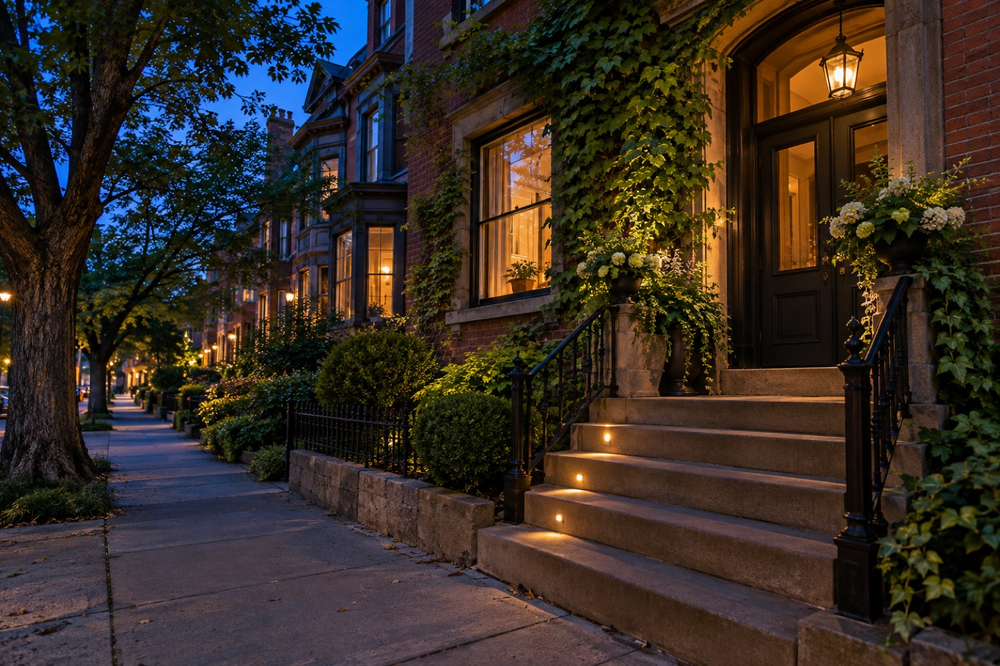
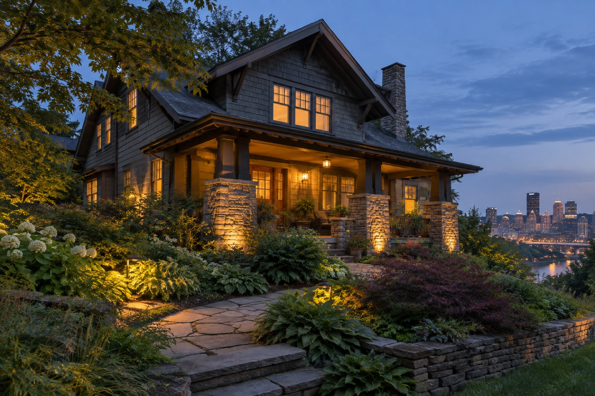
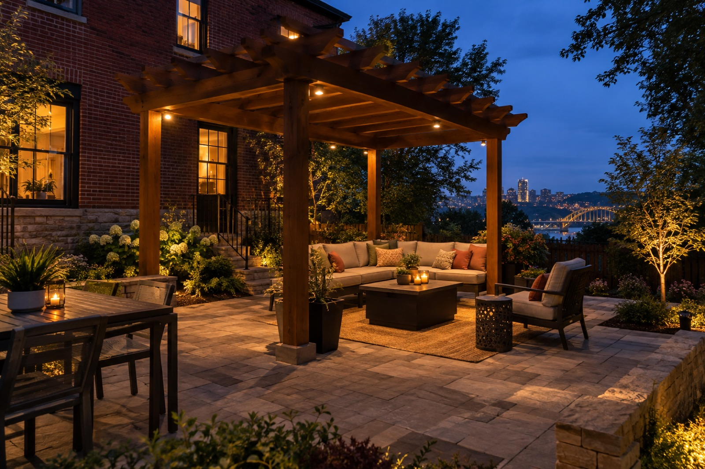

01
Start at the front
Make the approach and the architecture feel like one welcoming view.
Explore architecture ↗Landscape lighting design, installation, and service with Pittsburgh homes in mind.
Lumascapes is focused on transforming the way homes feel after sunset. With low-voltage landscape lighting, we look for the right balance: enough light to reveal the home and invite people outside, with enough shadow to keep the night beautiful.
Our work centers on design, installation, and service for pathways, patios, and architectural features. Whether you are imagining a welcoming front approach or a more inviting backyard, the conversation starts with your property and the way you want to use it.
Tell us about your space
Light should reveal what matters and leave room for the character of the night.
The layout of a path, the texture of a wall, and the shape of a tree all inform the design.
Thoughtful lighting can help outdoor spaces feel more welcoming and easier to enjoy.

Every home has its own evening rhythm. The front walk is an arrival. A porch is a pause. A patio is a place to stay. Lumascapes thinks about those experiences before deciding where light belongs.
Pittsburgh homes bring particular character to this work: brick and stone, hillsides, mature trees, narrow city gardens, and deep suburban yards. Lighting should respond to the real property in front of us rather than a fixed pattern.
Architecture, planting, and movement are part of one nighttime composition.
Warmth, restraint, and shadow help the important details stand out.
You do not need to know fixture names or have a complete design. Tell us which area you want to see differently and how you use it after sunset. We can discuss the possibilities for design, installation, or service.

Make the approach and the architecture feel like one welcoming view.
Explore architecture ↗
Give patios, decks, and garden seating room to feel inviting after dark.
Explore outdoor living ↗
Talk through changes to an existing lighting system as the landscape evolves.
Explore service ↗Tell us what you have in mind. We would love to talk through the possibilities for your Pittsburgh-area property.
Start a conversation